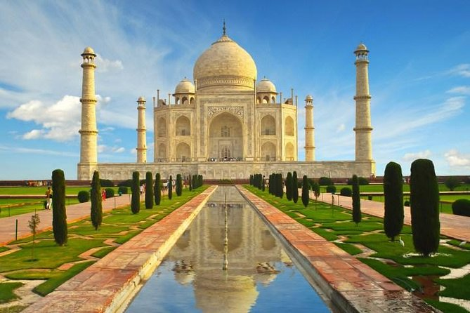
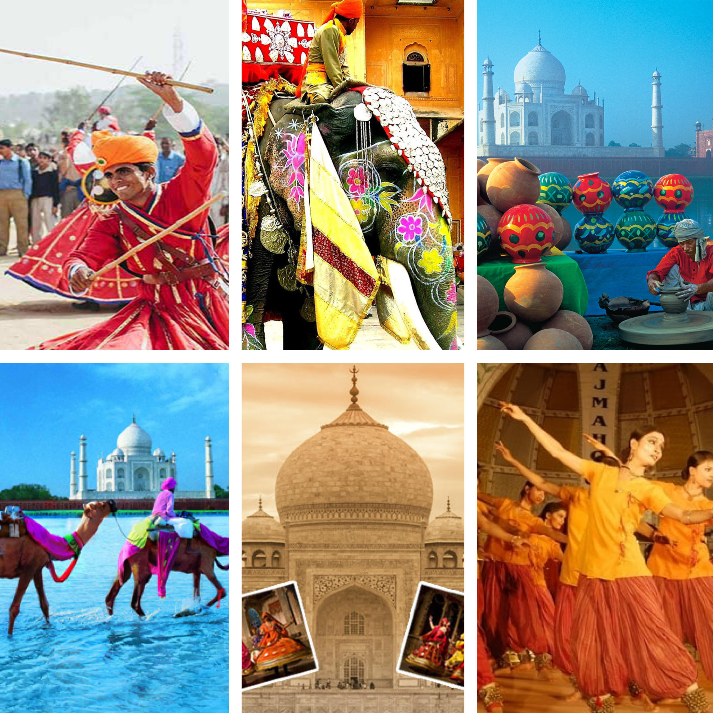

Agra est une ville située dans l'État de l'Uttar Pradesh en Inde, capitale de l'une des 18 divisions territoriales de cet État et du district homonyme. Agra possède un riche passé qui l'a mené au rang de capitale dès sa fondation au XVIe siècle. Située sur la rive ouest du fleuve Yamuna, elle figure définitivement parmi les étapes incontournables d'un voyage en Inde du Nord, par son patrimoine architectural et historique.
Le Taj-Mahal
Le Taj Mahal, l’une des Sept Merveilles du Monde ! C’est l’un des sites touristiques les plus attrayants depuis des années pour les touristes qui viennent visiter le Taj Mahal en premier lieu.

Taj Mahostsav, le festival à ne surtout pas râter !
Taj Mahotsav est un événement annuel de 10 jours à Shilpgram à Agra, en Inde. Ce festival évoque les souvenirs de l'ère moghole et du style nawabi répandus dans l'Uttar Pradesh aux XVIIIe et XIXe siècles.
Spectacle, couleur, art, bref; vous serez éblouis !

Le meilleur street-food
Explorez les délices riches et royaux d'Agra lors d'une promenade gastronomique dans les rues d'Agra. Petite astuce, mangez-les chauds !